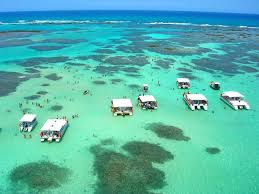

Descobrindo Maragogi: O Caribe Brasileiro
Escrito por: Caio Taveira
Maragogi, localizada no litoral norte de Alagoas, é conhecida como o Caribe Brasileiro devido às suas águas cristalinas e praias paradisíacas. Este destino é perfeito para quem busca relaxar e se conectar com a natureza.
Minha história
Olá, viajantes! 🌍 Hoje eu quero compartilhar com vocês a experiência incrível que tive ao visitar Maragogi. Se você ama praias de águas claras e tranquilas, este é o lugar ideal para você!
As Belezas Naturais
Maragogi é famosa por suas piscinas naturais, conhecidas como Galés, que se formam durante a maré baixa. A água é tão transparente que é possível ver os peixes nadando ao seu redor. Além disso, as praias de areia branca e coqueiros completam o cenário paradisíaco.
Atividades e Dicas
- Faça um passeio de barco até as Galés: É uma experiência única nadar nas piscinas naturais.
- Explore as praias: Cada praia em Maragogi tem sua própria beleza e charme.
- Leve equipamento de snorkel: A visibilidade da água é perfeita para observar a vida marinha.
Conclusão
Maragogi é um destino que oferece uma experiência de praia incomparável. Seja para relaxar nas areias brancas, explorar as piscinas naturais ou simplesmente admirar a beleza do mar, este é um lugar que todos deveriam visitar pelo menos uma vez na vida.